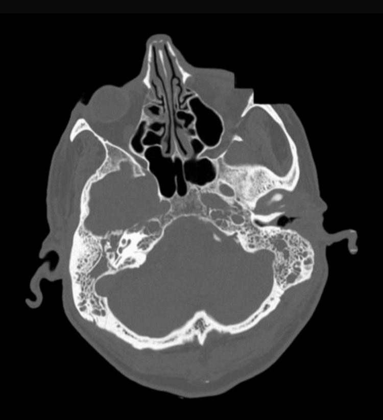
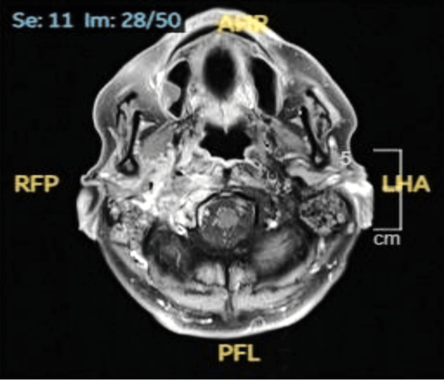
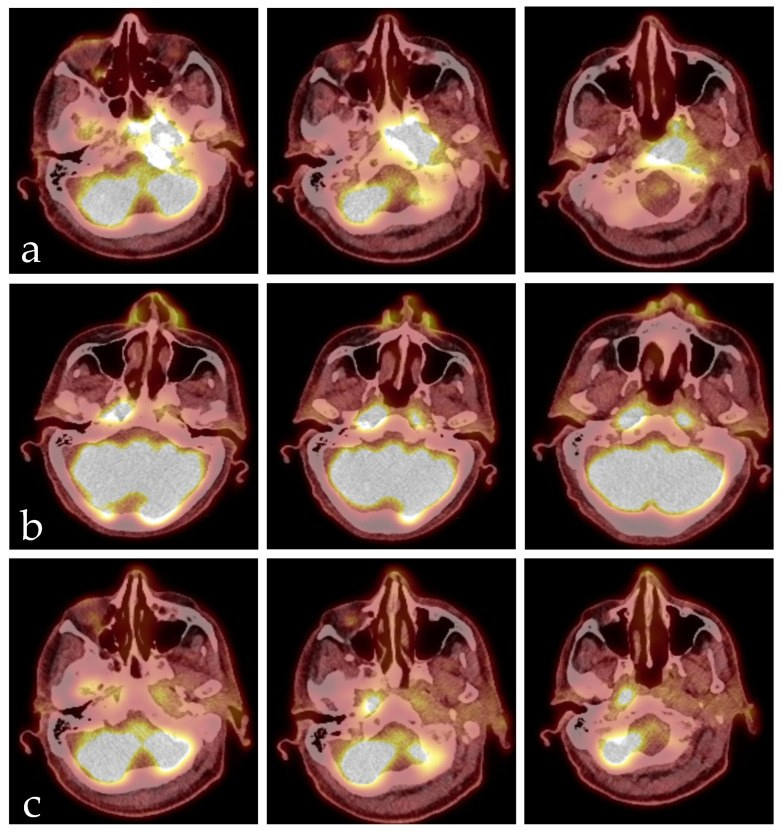

233 — Viêm tai ngoài ác tính & viêm xương nền sọ / Necrotizing (malignant) otitis externa & skull base osteomyelitis
Tags: pattern:viem-xuong-nen-so pattern:mo-xuong pattern:liet-day-than-kinh-so vung:ong-tai-ngoai vung:xuong-thai-duong vung:nen-so score:CN-palsy protocol:CT-xuong-thai-duong protocol:MRI-T1-fat-sat protocol:PET-FDG
Mức chắc chắn (certainty): tổng hợp y văn (literature synthesis) — gom đoàn hệ 36 tai (Costa MB & Onishi ET, Int Arch Otorhinolaryngol 2023, PMC10593509), 37 bệnh nhân theo phác đồ 6 tuần (Dhariwal A et al., J Int Adv Otol 2023, PMC10331632), 30 bệnh nhân theo dõi dài (Arslan IB et al., Eur Arch Otorhinolaryngol 2023, PMC9759449), ca nguyên văn CC BY 4.0 (Mahadevaswamy Susheela MK et al., Cureus 2025, PMC12584588) và phân tích gộp FDG-PET (Laidlaw M et al., Tomography 2026, PMC13030614).
1. Tổng quan bệnh học – cơ chế hình ảnh: nhiễm trùng "ăn" từ ống tai vào nền sọ
- Viêm tai ngoài ác tính (necrotizing otitis externa — NOE; tên cũ "malignant otitis externa") là nhiễm trùng xâm lấn khởi đầu ở ống tai ngoài (external auditory canal — EAC), lan qua xương–sụn tới xương thái dương và nền sọ. Tên "ác tính" chỉ mức độ nặng, không phải ung thư.
- TẠI SAO người đái tháo đường dễ mắc: tăng đường huyết gây bệnh vi mạch (microangiopathy) + suy giảm miễn dịch tại chỗ → thiếu máu nuôi, giảm bạch cầu tới ổ viêm, da ống tai teo–khô–nứt. Pseudomonas aeruginosa bám vào vùng nối xương–sụn qua các khe Santorini rồi lan theo mô liên kết và các lỗ mạch máu của xương nền sọ.
- Đường lan quyết định dây thần kinh nào liệt: ống tai → xương chũm → lỗ trâm chũm (stylomastoid foramen) cho dây VII; tiếp tới lỗ cảnh (jugular foramen) cho IX–XI; ống thần kinh hạ thiệt (hypoglossal canal) cho XII; lên clivus và xoang hang. Vì vậy liệt nhiều dây sọ liên tiếp là dấu hiệu lan nền sọ, không phải "biến chứng ngẫu nhiên".
- TẠI SAO hình ảnh đi trước/sau lâm sàng:
- CT cửa sổ xương chỉ thấy mòn vỏ xương khi đã mất khoáng đáng kể — CT bình thường KHÔNG loại trừ viêm xương nền sọ (đã có ca CT âm tính, MRI chẩn đoán — Wu M et al., BMJ Case Rep 2025, PMC12580850).
- MRI phản ánh thay thế tủy xương: tủy mỡ bình thường sáng trên T1W; khi bị viêm, mỡ bị thay bằng dịch/tế bào viêm → T1W tối hơn cơ/đĩa đệm, T2W sáng, ngấm thuốc sau tiêm. Mô mềm quanh nền sọ dày, thấm thuốc; thâm nhiễm mỡ sau lồi cầu (retrocondylar fat infiltration) là dấu sớm.
- DWI/ADC: ổ áp-xe giảm khuếch tán (ADC thấp); mô hạt viêm giảm nhẹ hơn.
- FDG-PET/CT đo hoạt tính chuyển hóa, không đo mật độ xương — dùng để theo dõi đáp ứng vì CT/MRI có thể còn bất thường rất lâu sau khi khỏi nhiễm.
- Ngưỡng định lượng trụ cột (đọc nhanh trước khi chọn ảnh):
- Tuổi trung bình: 68,5 (Costa) / 82 (Dhariwal) / 73 (CSBO Queensland).
- Đái tháo đường: 97% (Costa) / 54% ĐTĐ hoặc suy giảm miễn dịch khác (Dhariwal).
- Tác nhân: P. aeruginosa 50% (Costa) / 68% (Dhariwal); 35% chủng kháng ciprofloxacin.
- Liệt dây thần kinh sọ: 35%.
- CT: 94% được chụp; dày mô mềm ống tai 91%; mòn xương ống tai 59% (thành trước–dưới, phần trong).
- MRI: 41% được chụp; thâm nhiễm mô mềm sau lồi cầu/dưới thái dương 79%; khoang nhai 57%.
- Tái phát: 32% (11 đợt/8 bệnh nhân), trung bình 100 ngày sau ngừng kháng sinh.
- Tử vong: 9% (Costa) / 23,3% (Arslan) / 31,8% (CSBO Queensland).
- Chữa khỏi với phác đồ 6 tuần: 86% (32/37).
- FDG-PET theo dõi đáp ứng: Se 95,2%, Sp 89,1%, LR+ 8,7, LR− 0,05 (8 nghiên cứu, 154 tổn thương).
2. Mẫu hình + chẩn đoán phân biệt theo vị trí (Gamut)
- Giới hạn ở ống tai ngoài: viêm tai ngoài nặng do vi khuẩn, viêm tai ngoài do nấm (otomycosis), chàm/viêm da tiếp xúc, ung thư biểu mô vảy ống tai (SCC) — thể loét, chắc, đau kéo dài.
- Ống tai + xương chũm: viêm xương chũm kết dính (coalescent mastoiditis), cholesteatoma ăn xương, NOE lan ra sau.
- Nền sọ bên (lateral skull base): NOE/SBO do tai — tổn thương quanh lồi cầu, bờ trước xương đá, lỗ cảnh.
- Nền sọ giữa (central skull base): viêm xương nền sọ giữa (central SBO) — clivus, xương chẩm; thường không có nguồn tai, tác nhân S. aureus (kể cả MRSA), người không ĐTĐ; dễ nhầm ung thư vòm (NPC), di căn/xương tủy, chordoma, IgG4, lao.
- Theo biến chứng thần kinh–mạch máu:
- Liệt VII đơn thuần (sớm); hội chứng Vernet (IX–XI), Collet–Sicard (IX–XII), Villaret (IX–XII + giao cảm).
- Huyết khối xoang bên/tĩnh mạch cảnh trong, hẹp/tắc động mạch cảnh trong (ICA) do viêm bao quanh — biến chứng nặng, có thể gây nhồi máu não (Toufga Z et al., Cureus 2026, PMC13384415).
- Viêm màng não, áp-xe nội sọ (đường lan trực tiếp).
- Kẻ giả danh lâm sàng: đau khớp thái dương–hàm, đau dây V, viêm tuyến mang tai, viêm mô tế bào vùng cổ — bệnh nhân được điều trị "viêm tai ngoài thường" nhiều tuần trước khi chẩn đoán.
- Mnemonic "DEEP": Diabetes (ĐTĐ/giảm miễn dịch), EAC granulation (mô hạt ống tai), Erosion (mòn xương nền sọ), Pseudomonas + Palsy dây sọ.
3. Bảng so sánh phân biệt (ma trận đối chiếu)
| Thực thể (entity) | Hình ảnh điển hình | Chốt vào (rule-in) | Chốt loại (rule-out) | Gợi ý xác nhận |
|---|---|---|---|---|
| NOE/SBO do tai | CT: dày mô mềm ống tai + mòn xương ống tai/bờ trước xương đá; MRI T1FS sau tiêm: thấm thuốc quanh lồi cầu, clivus, khoang nhai | ĐTĐ + đau tai dữ dội kéo dài + mô hạt ống tai + mòn xương nền sọ | Mô hạt không mòn xương, đau đáp ứng 1 tuần kháng sinh thường → viêm tai ngoài đơn thuần | Nuôi cấy sâu + sinh thiết + CT/MRI |
| SCC ống tai | CT: khối mô mềm trong ống tai, mòn xương không đối xứng; MRI: khối ngấm thuốc, DWI hạn chế, có thể hạch cổ | Khối chắc/loét + mô bệnh ác tính | Tổn thương mềm, đối xứng, đáp ứng kháng sinh → viêm | Sinh thiết bắt buộc |
| NPC / ung thư vòm | MRI: khối xoang Rosenmüller, lan nền sọ, hạch cổ; PET dương tính | Khối vòm + hạch cổ + EBV | Niêm mạc vòm bình thường, đối xứng → ít nghĩ NPC | Nội soi + sinh thiết vòm |
| Viêm xương nền sọ giữa (central SBO) | MRI: clivus/xương chẩm T1 tối, ngấm thuốc, mô mềm trước clivus; CT có thể bình thường | Đau cổ/vùng chẩm + CRP cao + MRI dương tính | CT bình thường không loại trừ; cần MRI | MRI + cấy máu/sinh thiết xương |
| Cholesteatoma biến chứng | CT: mòn scutum, chuỗi xương con, khối mềm thượng nhĩ; non-EPI DWI sáng | Khối keratin + mòn xương đặc trưng | DWI âm + mô hạt → không cholesteatoma | MRI non-EPI DWI |
| NOE do nấm | Giống NOE vi khuẩn; có thể xâm lấn mạnh, liệt nhiều dây; nuôi cấy nấm dương | Suy giảm miễn dịch nặng + cấy nấm + không đáp ứng kháng sinh | Cấy nấm âm và đáp ứng kháng sinh → vi khuẩn | Cấy nấm + PCR/giải phẫu bệnh |
| IgG4 nền sọ | MRI: dày mô mềm đối xứng, ngấm thuốc đồng nhất, có thể kèm viêm tụy/tuyến nước bọt | IgG4 huyết thanh cao + mô bệnh tương ứng | IgG4 bình thường, tổn thương một bên → ít nghĩ | Sinh thiết + IgG4 |
| Di căn/xương tủy nền sọ | CT: tiêu xương nhiều ổ; MRI: thay tủy nhiều vị trí, không thấm mô mềm kiểu viêm | Tiền sử ung thư + nhiều ổ + tăng canxi | Một ổ viêm khu trú, thấm thuốc mô mềm → viêm | MRI toàn thân/PET + mô bệnh |
4. Protocol chụp + phác đồ điều trị & theo dõi
- CT xương thái dương (temporal bone CT): lát 0,6–1 mm, tái tạo axial + coronal, cửa sổ xương + mô mềm; tìm dày mô mềm ống tai, mòn thành trước–dưới ống tai, mòn bờ trước xương đá, vách xoang chũm, lỗ cảnh. CT không cản quang là đủ cho xương; thêm cản quang khi tìm áp-xe.
- MRI nền sọ (bắt buộc khi nghi lan nền sọ hoặc CT âm tính): 1,5 hoặc 3 T; T1W axial, T2W fat-sat, DWI/ADC, T1W fat-sat sau gadolinium (axial + coronal + sagittal); FOV phủ từ xoang bướm tới C2. Đọc: tủy xương T1 tối, mô mềm quanh lồi cầu/clivus, khoang nhai, xoang hang, ICA, xoang bên; thêm MRA/MRV khi có triệu chứng mạch máu hoặc liệt dây thấp.
- FDG-PET/CT (hoặc xạ hình bạch cầu): chỉ định khi cần quyết định ngừng kháng sinh hoặc nghi tái phát; SUVmax tỉ lệ tổn thương/nền (LBR) ngưỡng 4,1 cho độ chính xác 100% trong loạt 17 ca (Hurstel M et al., J Otolaryngol Head Neck Surg 2024, PMC11487542); xạ hình bạch cầu 4 giờ với ngưỡng 1,19 đạt 88%.
- Xét nghiệm: CRP + ESR hàng tuần (CRP trung bình lúc nhập 40,6 mg/L, ESR 58,7 mm trong loạt Costa); công thức máu, HbA1c, chức năng thận (liều ciprofloxacin/ceftazidime).
- Vi sinh + mô bệnh: cấy mủ sâu/ống tai (không chỉ ngoáy nông), sinh thiết mô hạt BẮT BUỘC để loại SCC và tìm nấm/lao. Sinh thiết xương khi cấy nông âm.
- Điều trị kháng sinh (khung định lượng):
- 6 tuần là mốc tối thiểu; phác đồ chuẩn hóa: 3 tuần ceftazidime tĩnh mạch + ciprofloxacin uống, sau đó 3 tuần ciprofloxacin uống → chữa khỏi 86% (32/37) trong phác đồ 6 tuần (Dhariwal 2023).
- Phác đồ khác: ceftazidime TM tối thiểu 6 tuần, hoặc ciprofloxacin 750 mg mỗi 12 giờ ở ca nhẹ–trung bình điều trị ngoại trú; kháng sinh theo kháng sinh đồ, không dùng đơn trị ciprofloxacin khi tỷ lệ kháng 35%.
- Kiểm soát đường huyết chặt, làm sạch ống tai, giảm đau; oxy cao áp (HBO) là hỗ trợ, không thay kháng sinh.
- Ngoại khoa: hạn chế ở sinh thiết/lấy mủ, cắt xương chũm khi có ổ mủ/cholesteatoma; không "mổ rộng" nền sọ.
- Tiêu chuẩn ngừng kháng sinh: hết đau tai, ống tai khô–hết mô hạt, CRP/ESR về bình thường, và hình ảnh không tiến triển; nếu còn nghi ngờ → FDG-PET (LR− 0,05 giúp loại trừ nhiễm tồn dư). Theo dõi tiếp 3 tháng vì tái phát trung bình 100 ngày.
flowchart TD
A[Đau tai dữ dội ở người đái tháo đường] --> B[Soi ống tai: mô hạt vùng nối xương sụn]
B --> C[CT xương thái dương lát mỏng]
C --> D{CT có mòn xương hoặc nghi lan nền sọ}
D -->|Có| E[MRI nền sọ có gadolinium + DWI]
D -->|Không nhưng lâm sàng nặng| E
E --> F{Sinh thiết mô hạt + cấy sâu}
F -->|Ung thư| G[Chuyển ung thư đầu cổ]
F -->|Nhiễm khuẩn hoặc nấm| H[Kháng sinh theo kháng sinh đồ 6 tuần]
H --> I{Có liệt dây sọ hoặc sốt cao}
I -->|Có| J[MRA MRV + khám thần kinh + nội soi tai mũi họng]
I -->|Không| K[Theo dõi CRP ESR hàng tuần]
J --> L[Đánh giá ICA và xoang bên]
K --> M{Hết đau và CRP bình thường sau 6 tuần}
M -->|Có| N[Ngừng kháng sinh + theo dõi 3 tháng]
M -->|Không| O[FDG-PET hoặc xạ hình bạch cầu]
O --> P{Còn hoạt tính}
P -->|Có| H
P -->|Không| N
- Phân tầng theo vị trí tổn thương: ống tai đơn thuần → điều trị ngoại trú được nếu không liệt dây, không dấu nền sọ; lan nền sọ bên → nhập viện, kháng sinh TM; nền sọ giữa/clivus → cân nhắc S. aureus/MRSA, tìm ổ nhiễm ngoài tai, tiên lượng nặng hơn (tử vong 31,8%, di chứng 45,5% trong loạt CSBO Queensland).
5. Biến thể bình thường và cạm bẫy
- Mô hạt ở vùng nối xương–sụn là dấu hiệu kinh điển nhưng không đặc hiệu — viêm tai ngoài nặng cũng có; chốt là mòn xương + bối cảnh ĐTĐ + không đáp ứng điều trị thường.
- CT âm tính không loại trừ: mòn xương chỉ thấy khi mất khoáng đủ nhiều; MRI là cửa chốt khi lâm sàng nghi (đã có ca CT bình thường, MRI phát hiện viêm xương chẩm — PMC12580850).
- Hình ảnh tồn dư sau khỏi: CT/MRI có thể còn dày xương, thấm thuốc nhiều tháng; đừng kéo dài kháng sinh chỉ vì "ảnh còn xấu" — dùng lâm sàng + CRP/ESR + PET.
- PET dương tính giả do viêm mô hạt/hậu xạ; luôn đối chiếu lâm sàng và so sánh hai thời điểm (SUV giảm mới có ý nghĩa).
- Không chỉ nghĩ Pseudomonas: nấm (Scedosporium/Aspergillus) ở người suy giảm miễn dịch, S. aureus/MRSA ở nền sọ giữa; cấy nấm chỉ dương ở 72% ca được điều trị phối hợp kháng nấm (125 ca, Vofo G et al., Eur Arch Otorhinolaryngol 2026, PMC12904872) → âm tính không loại trừ.
- Bỏ sót SCC vì "đã có chẩn đoán NOE": mọi ca đều sinh thiết; tổn thương không đáp ứng sau 2–3 tuần phải sinh thiết lại.
- Liệt dây VII đơn thuần ở người trẻ/không ĐTĐ: nghĩ viêm xương nền sọ giữa, cholesteatoma, ung thư, Bell's palsy — không mặc định NOE.
- Satisfaction of search: thấy mòn xương rồi bỏ sót huyết khối xoang/ICA, áp-xe nội sọ, liệt dây thấp; luôn khám 12 dây và đọc mạch máu.
6. Tự lượng giá — Blind Quiz
Ca 1 — Nam 67 tuổi, ĐTĐ type 2 kiểm soát kém, đau tai phải dữ dội 6 tuần, chảy mủ, đã dùng kháng sinh uống không đỡ. CT xương thái dương.

- Câu hỏi: (1) Bất thường xương ở đâu? (2) Vì sao CT này quan trọng hơn "dày mô mềm ống tai"? (3) Bước tiếp theo?
Bấm để hiện đáp án (findings + chẩn đoán)
- Dấu hiệu: mất vỏ xương và tiêu xương đỉnh xương đá/nền sọ bên phải, kèm dày mô mềm quanh ống tai ngoài; đối chiếu bên trái bình thường.
- Chẩn đoán: viêm tai ngoài ác tính (NOE) lan nền sọ — CT chứng minh mòn xương, không còn là "viêm tai ngoài thường".
- Bước tiếp: MRI nền sọ có gadolinium + DWI, sinh thiết mô hạt (loại SCC), cấy sâu, nhập viện kháng sinh TM ít nhất 6 tuần, kiểm soát đường huyết.
- Nguồn ảnh: Mahadevaswamy Susheela MK et al., Cureus 2025, PMC12584588 Fig. 1, CC BY 4.0.
Ca 2 — Cùng bệnh nhân, liệt dây VII và dây thấp, sốt. MRI đầu có gadolinium.

- Câu hỏi: (1) Mô tả tổn thương mô mềm và xương? (2) Vì sao phải khám đủ 12 dây thần kinh? (3) Cần thêm chuỗi xung nào để tìm biến chứng mạch máu?
Bấm để hiện đáp án (findings + chẩn đoán)
- Dấu hiệu: dày và ngấm thuốc mô mềm quanh ống tai ngoài/xương chũm phải, viêm xương chũm, ổ áp-xe nhỏ trong xương chũm, và thay đổi tủy xương nền sọ (tín hiệu bất thường, ngấm thuốc).
- Chẩn đoán: NOE có biến chứng viêm xương nền sọ + áp-xe xương chũm, đủ tiêu chuẩn nhập viện kháng sinh TM kéo dài.
- Vì sao khám 12 dây: liệt VII → IX–XI → XII theo đường lan giải phẫu; phát hiện liệt dây thấp đổi tiên lượng và chỉ định MRA/MRV.
- Chuỗi xung cần thêm: MRA/MRV (hẹp/tắc ICA, huyết khối xoang bên), DWI/ADC (áp-xe), T1 fat-sat sau tiêm toàn nền sọ.
- Nguồn ảnh: Mahadevaswamy Susheela MK et al., Cureus 2025, PMC12584588 Fig. 2, CC BY 4.0.
Ca 3 — Bệnh nhân viêm xương nền sọ giữa/clivus, FDG-PET/CT ba thời điểm: lúc chẩn đoán (a), sau 6 tuần kháng sinh (b), hai tháng sau ngừng kháng sinh (c).

- Câu hỏi: (1) Hoạt tính thay đổi thế nào? (2) Vì sao không dừng kháng sinh chỉ dựa vào một lần chụp? (3) Khi nào dùng PET để quyết định ngừng?
Bấm để hiện đáp án (findings + chẩn đoán)
- Dấu hiệu: (a) tăng tích tụ mạnh ở vòm mũi họng trái và nền sọ/clivus; (b) sau 6 tuần kháng sinh, tổn thương nhỏ đi rõ nhưng xuất hiện ổ tích tụ mới ở vòm phải; (c) hai tháng sau ngừng kháng sinh chỉ còn tồn dư nhẹ.
- Chẩn đoán: viêm xương nền sọ giữa do vi khuẩn, đáp ứng một phần rồi thoái triển; ổ mới ở (b) là bẫy "tái phát giả" do viêm mô hạt — cần đối chiếu lâm sàng/CRP.
- Vì sao không dừng theo một lần chụp: cả CT và MRI đều có thể còn bất thường sau khỏi; FDG-PET có LR− 0,05 nên hữu ích để loại trừ nhiễm tồn dư, nhưng vẫn cần hai thời điểm và lâm sàng.
- Ngưỡng tham khảo: SUVmax tỉ lệ tổn thương/nền 4,1 (độ chính xác 100% trong loạt 17 ca) — dùng như xu hướng, không phải ngưỡng tuyệt đối.
- Nguồn ảnh: Stocker M et al., Diseases 2026, PMC13115020 Fig. 1, CC BY 4.0.
Bài liên quan chéo
- 237 – Biến chứng thần kinh sọ của viêm tai: Gradenigo, liệt VII, viêm mê nhĩ (liệt dây VII và biến chứng viêm tai)
- 236 – Viêm tai xương chũm & biến chứng nội sọ (huyết khối xoang, áp-xe nội sọ)
- 720 – Xương đá & cholesteatoma (mòn xương, non-EPI DWI)
- 730 – Nhiễm trùng khoang cổ sâu (lan theo khoang nguy hiểm)
- 750 – Hạch cổ & NI-RADS (hạch cổ kèm khối vòm/ống tai)
- 700 – Tổng quan Đầu Mặt Cổ
Không dùng để chẩn đoán độc lập khi chưa có người hướng dẫn.